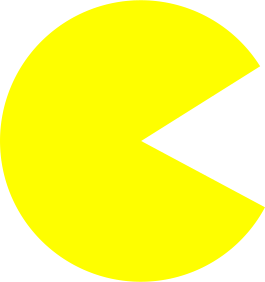

Pac-Man



A classic from the 80s, Pac-Man is a maze arcade game developed by Namco. The objective of the game is to consume all the white dots within the maze while avoiding four colored ghosts. Power pellets can be consumed to turn ghosts into blue ghosts which Pac-Man can consume for bonus points.